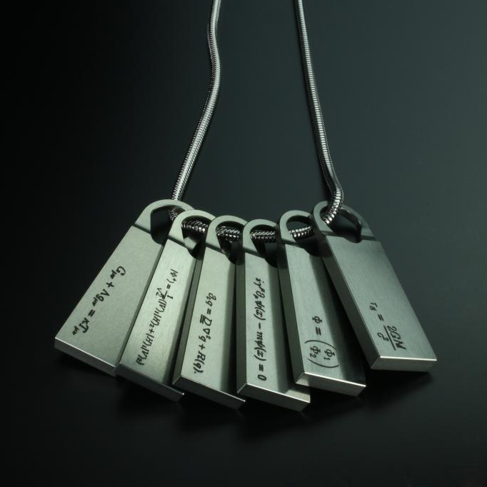

Q-PID
A Q-pid is a necklace that contains a high amount of chiralium, which bears a series of tag-engraved physics equations, containing all of the necessary security and operations protocols to integrate a terminal location into the Chiral Network. All established strand points are accessible to those bearing the required equations.